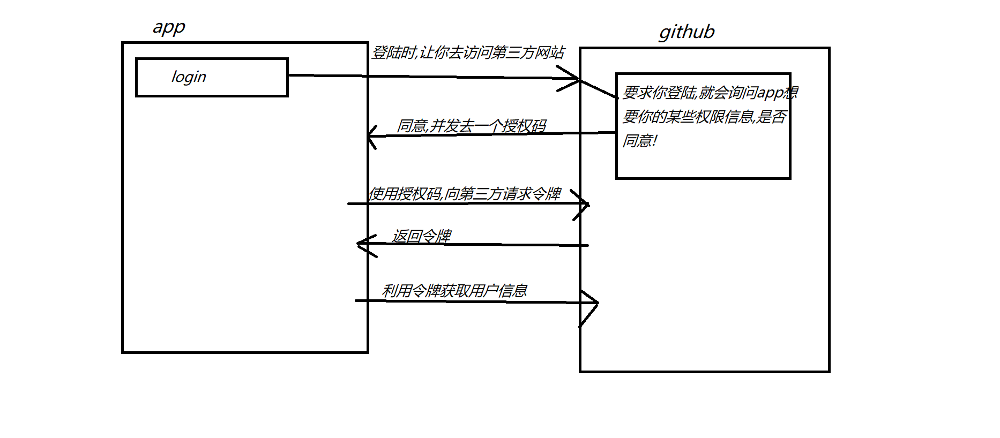
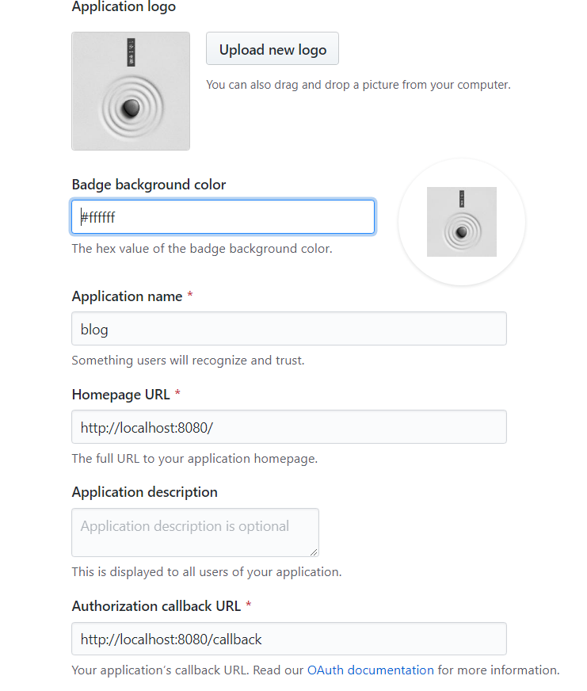

原文连接:https://www.cnblogs.com/awsljava/p/11596077.html
使用github OAuth实现用户登录
做登录功能时，允许使用第三方网站的身份，这称为"第三方登录"。
原理


github内的认证方法
在github上申请OAuth App，进入个人的Github首页，Settings->Applications->Developer applications->Register a new application


注册这个app的目的：You can enable other users to authorize your OAuth App.
您可以让其他用户授权您的OAuth应用程序。
获取code和state
<a href="https://github.com/login/oauth/authorize?client_id=1d1f99e3efc33edcbf45&redirect_uri=http://localhost:8080/callback&scope=user&state=1">登陆</a>scope属性列出了用户授予的附加到令牌的范围。通常，这些范围将与您要求的范围相同。但是，用户可以编辑其范围，从而有效地授予您的应用程序比您最初请求的访问权限少的权限。此外，用户可以在OAuth流完成后编辑令牌作用域。您应该意识到这种可能性，并相应地调整应用程序的行为。
处理用户选择授予您的访问权限比您最初请求的权限少的错误情况非常重要。例如，应用程序可以警告其用户或以其他方式与其用户进行通信，告知他们功能将减少或无法执行某些操作。
此外，应用程序始终可以再次将用户发送回流程，以获取其他权限，但是请不要忘记用户总是可以拒绝。
client_id就是注册给的那个,redirect_uri就是你写的回调地址,通过访问这个地址获取令牌
| Name | Type | Description |
|---|---|---|
client_id |
string |
Required. The client ID you received from GitHub when you registered 必需的。注册时从GitHub收到的客户端ID。 |
redirect_uri |
string |
The URL in your application where users will be sent after authorization. See details below about redirect urls应用程序中的URL，用户将在授权后发送到该URL。请参阅下面关于重定向url的详细信息。 |
login |
string |
Suggests a specific account to use for signing in and authorizing the app.建议使用一个特定的帐户来登录和授权应用程序。 |
scope |
`string | 以空格分隔的范围列表。如果没有提供作用域，对于没有为应用程序授权任何作用域的用户，作用域默认为空列表。对于已经为应用程序授权了范围的用户，不会显示带有范围列表的OAuth授权页面。相反，流的这一步将使用用户为应用程序授权的范围集自动完成。例如，如果用户已经执行了两次web流，并且授权了一个具有用户范围的令牌和另一个具有回购范围的令牌，则第三个web流不提供sc |
state |
string |
An unguessable random string. It is used to protect against cross-site request forgery attacks.不可猜测的随机字符串。它用于防止跨站点请求伪造攻击。 |
allow_signup |
string |
Whether or not unauthenticated users will be offered an option to sign up for GitHub during the OAuth flow. The default is true. Use false in the case that a policy prohibits signups.在OAuth流期间，是否会为未经身份验证的用户提供一个注册GitHub的选项。默认值为true。在策略禁止注册的情况下使用false。 |
通过获取的code和state,利用httpclient来获取AccessToken
java代码callback接口如下:
@Value("${github.client.id}")
private String id;
@Value("${github.client.secret}")
private String secret;
@Value("${github.redirect.uri}")
private String uri;
@RequestMapping("/callback")
public String callback(@RequestParam(name = "code") String code,
@RequestParam(name = "state") String state,
HttpServletResponse response) {
//通过一个DTO对象封装,接收的code state
AccessTokenDTO accessTokenDTO = new AccessTokenDTO();
accessTokenDTO.setCode(code);
accessTokenDTO.setClient_id(id);
accessTokenDTO.setClient_secret(secret);
accessTokenDTO.setState(state);
accessTokenDTO.setRedirect_uri(uri);
//得到github传回来的数据 code + Client Secret+Client id来获取token
String accessToken = githubProvider.getAccessToken(accessTokenDTO);
//通过解析封装成一个对象
GithubUser githubUser = githubProvider.getUser(accessToken);
if (githubUser != null) {
//写入数据库
}
//login success
// request.getSession().setAttribute("user",githubUser);
return "redirect:/";
} else {
return "redirect:/";
}
利用获取过来的AccessToken来再次访问github来获取用户信息
其中githubprovider代码如下:
public String getAccessToken(AccessTokenDTO accessTokenDTO) {
//设置从GitHub那里获取的数据设置成josn格式
MediaType mediaType = MediaType.get("application/json; charset=utf-8");
OkHttpClient client = new OkHttpClient();
//通过okhttclient来获取github传过来的用户信息,要利用到AceessTokenDTO内的数据!
//将传过来的accesstokendto转化为json格式,通过post形式传给github
RequestBody body = RequestBody.create(mediaType, JSON.toJSONString(accessTokenDTO));
Request request = new Request.Builder()
.url("https://github.com/login/oauth/access_token")
.post(body)
.build();
try (Response response = client.newCall(request).execute()) {
String string = response.body().string();
//把传过来的token解析
String token = string.split("&")[0].split("=")[1];
return token;
} catch (Exception e) {
//log.error("getAccessToken error,{}", accessTokenDTO, e);
}
return null;
}
public GithubUser getUser(String accessToken) {
//通过得到的token获取user
OkHttpClient client = new OkHttpClient();
Request request = new Request.Builder()
.url("https://api.github.com/user?access_token=" + accessToken)
.build();
try {
Response response = client.newCall(request).execute();
String string = response.body().string();
//封装
GithubUser githubUser = JSON.parseObject(string, GithubUser.class);
//System.out.println(string);
return githubUser;
} catch (Exception e) {
// log.error("getUser error,{}", accessToken, e);
}
return null;
}
获取的json内容如下：
//封装
JSON.parseObject(string, GithubUser.class);
{
"login": "Diamondtest",
"id": 28478049,
"avatar_url": "https://avatars0.githubusercontent.com/u/28478049?v=3",
"gravatar_id": "",
"url": "https://api.github.com/users/Diamondtest",
"html_url": "https://github.com/Diamondtest",
"followers_url": "https://api.github.com/users/Diamondtest/followers",
"following_url": "https://api.github.com/users/Diamondtest/following{/other_user}",
"gists_url": "https://api.github.com/users/Diamondtest/gists{/gist_id}",
"starred_url": "https://api.github.com/users/Diamondtest/starred{/owner}{/repo}",
"subscriptions_url": "https://api.github.com/users/Diamondtest/subscriptions",
"organizations_url": "https://api.github.com/users/Diamondtest/orgs",
"repos_url": "https://api.github.com/users/Diamondtest/repos",
"events_url": "https://api.github.com/users/Diamondtest/events{/privacy}",
"received_events_url": "https://api.github.com/users/Diamondtest/received_events",
"type": "User",
"site_admin": false,
"name": null,
"company": null,
"blog": "",
"location": null,
"email": null,
"hireable": null,
"bio": null,
"public_repos": 0,
"public_gists": 0,
"followers": 0,
"following": 0,
"created_at": "2017-05-06T08:08:09Z",
"updated_at": "2017-05-06T08:16:22Z"
}
授权之后,每次登陆都不需要再次授权,可更换浏览器或者选择revoke all user tokens 就可以了!

okhttpclient的用例与介绍
介绍
OkHttp是一个HTTP客户机，默认情况下是高效的：
-
http/2支持允许对同一主机的所有请求共享套接字。
-
连接池可以减少请求延迟(如果HTTP/2不可用)。
-
透明GZIP缩小下载大小。
-
响应缓存完全避免了重复请求的网络。
OkHttpClient client = new OkHttpClient();
//获取URL
//访问URL并获取该网站返回过来的字符串
String run(String url) throws IOException {
Request request = new Request.Builder()
.url(url)
.build();
try (Response response = client.newCall(request).execute()) {
return response.body().string();
}
}
public static final MediaType JSON
= MediaType.get("application/json; charset=utf-8");
OkHttpClient client = new OkHttpClient();
//发送到服务器
//通过build一个request 并将需要的参数封装到body 访问url,执行client.newCall(request).execute(),得到返回值,一般是一个json格式的字符串,当然也可以自己选择它的返回数据格式!
String post(String url, String json) throws IOException {
RequestBody body = RequestBody.create(json, JSON);
Request request = new Request.Builder()
.url(url)
.post(body)
.build();
try (Response response = client.newCall(request).execute()) {
return response.body().string();
}
}
详情参见:okhttp